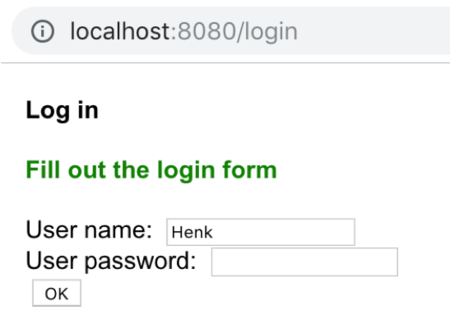

34. Sessions & Scopes#
34.1. Introduction#
In this post, some seemingly diverse topics are dealt with. After reading, you should be aware that they actually relate.
The topics are:
application-scoped variables with web.xml
user authentication
sessions
overview of the different scopes and when to use which

DISCLAIMER
Everything in this presentation related to authentication is purely for the purpose of showing principles.
For real-world applications you will need to do much work on security
34.2. Scopes#
34.2.1. Application scope: web.xml#
You use application-scoped variables for everything that
relates to the entire application: admin email, database type and url, servlet configuration, etc.
Application-scoped variables are available withing servlets but also within Thymeleaf templates. These variables are defined within an xml file named web.xml and it is called a deployment descriptor.
34.2.2. Adding a deployment descriptor#
These are the steps you can take to have IntelliJ add a web.xml file in the correct location.
Go to Project Structure (
Cmd + ;on Mac)Facets → Web → Web Gradle (select your project)
Under pane Deployment Descriptors, click “+”
Select “web.xml”
In the path, put this:
<your project root>/src/main/webapp/WEB-INF/web.xml
You’ll get something like this
<?xml version="1.0" encoding="UTF-8"?>
<web-app xmlns="http://xmlns.jcp.org/xml/ns/javaee"
xmlns:xsi="http://www.w3.org/2001/XMLSchema-instance"
xsi:schemaLocation="http://xmlns.jcp.org/xml/ns/javaee http://xmlns.jcp.org/xml/ns/javaee/web-app_4_0.xsd"
version="4.0">
</web-app>
34.2.3. Add an application-scoped variable#
In web.xml, put the following snippet:
<context-param>
<param-name>admin_email</param-name>
<param-value>admin@example.com</param-value>
</context-param>
34.2.4. Using the application-scoped variable#
In your servlets, use the web app variable like this:
getServletContext().getInitParameter("admin_email")
In your Thymeleaf template, the application-scoped variable, is available like this
th:text="${#servletContext.getInitParameter('admin_email')}"
34.2.5. Session scope: cross-request “memory”#
A server handling your request will have no memory of your visit after it is processed. To be able to “keep in touch” you will need to have a tracking system: we call this a session. The most well-known session implementation system is by means of cookies.
This is a cookie according to Wikipedia: “In computing, a cookie (also tracking cookie, browser cookie, and HTTP cookie) is a small piece of text stored on a user’s computer by a web browser. A cookie consists of one or more name-value pairs containing bits of information such as … the identifier for a server-based session….”
Thus, sessions represent cross-request memory.
Typical usages of session objects are
keeping an authenticated user “logged in”
keeping track of “shopping baskets”
keeping track of history (“here at the items you have looked at previously”)
In java, sessions are usually maintained by means of a JSessionID stored as a cookie.
You will probably never create a cookie directly. You simply use this statement:
HttpSession session = request.getSession();
34.2.6. Authentication#
You do not need to have an authenticated user to create a session, but authentication is never done without using session.
There are several reasons why you would like to know who it is that requests a certain page, the main reason being that you want only authorized persons to have access (and with a certain role).
Let’s look at some sample code to create a login system using sessions.
34.2.7. Login form#
Here is the first element, a login form. Take notice of the form field names eg name="username". These names are going to be used in the servlet to fetch the login credentials. Also note the action="login" attribute of the <form> tag. It will direct to the server requesting resource login.
<!DOCTYPE html SYSTEM "http://www.thymeleaf.org/dtd/xhtml1-strict-thymeleaf-4.dtd">
<html xmlns="http://www.w3.org/1999/xhtml"
xmlns:th="http://www.thymeleaf.org">
<head>
<meta http-equiv="Content-Type" content="text/html; charset=UTF-8"/>
<title>Authentication demo</title>
<link rel="stylesheet" th:href="@{/css/main.css}" href="../../css/main.css">
</head>
<body>
<h4>Log in</h4>
<h4 th:text="${message}" th:class="${message_type}">_message_</h4>
<form action="login" method="POST">
<label for="username_field"> User name: </label>
<input id="username_field" type="text" name="username" required/> <br/>
<label for="password_field"> User password: </label>
<input id="password_field" type="password" name="password" required/><br/>
<label class="login_field"> </label>
<input type="submit" value="OK"/>
</form>
<h5>If you have any problems, please contact <span th:text="${#servletContext.getInitParameter('admin_email')}"></span></h5>
</body>
</html>
and it looks like this in the browser:

Actually, when you see a http:// protocol instead of an https:// protocol in the location bar of your browser, you do NOT have safety on you connection, even though you cannot see the password in the form!
But that issue is not within the scope of this course.
34.2.8. Login servlet#
This is the servlet dealing with the login form.
package nl.bioinf.wis_on_thymeleaf.servlets;
//many imports
@WebServlet(urlPatterns = "/login")
public class LoginServlet extends HttpServlet {
private TemplateEngine templateEngine;
@Override
public void init() throws ServletException {
this.templateEngine = WebConfig.getTemplateEngine();
}
protected void doPost(HttpServletRequest request, HttpServletResponse response) throws ServletException, IOException {
String username = request.getParameter("username");
String password = request.getParameter("password");
WebContext ctx = new WebContext(
request,
response,
request.getServletContext(),
request.getLocale());
//fetch the session object
//if it is not present, one will be created
HttpSession session = request.getSession();
String nextPage;
if (session.isNew() || session.getAttribute("user") == null) {
boolean authenticated = authenticate(username, password);
if (authenticated) {
session.setAttribute("user", new User("Henk", "henk@example.com", Role.USER));
nextPage = "mainSite";
} else {
ctx.setVariable("message", "Your password and/or username are incorrect; please try again");
ctx.setVariable("message_type", "error");
nextPage = "login";
}
} else {
nextPage = "mainSite";
}
templateEngine.process(nextPage, ctx, response.getWriter());
}
private boolean authenticate(String username, String password) {
return username.equals("Henk") && password.equals("henk");
}
//simple GET requests are immediately forwarded to the login page
protected void doGet(HttpServletRequest request, HttpServletResponse response) throws ServletException, IOException {
WebContext ctx = new WebContext(
request,
response,
request.getServletContext(),
request.getLocale());
ctx.setVariable("message", "Fill out the login form");
ctx.setVariable("message_type", "info");
templateEngine.process("login", ctx, response.getWriter());
}
}
Above the class declaration you see the @WebServlet(urlPatterns = "/login") annotation which tells the application server to route all requests to the URL /login to this servlet class.
The doPost() method -which has several code smells (do you know which)- creates a session object. Next, it checks the session status and proceeds. If it is new (or empty): check user credentials. Else: go directly to the main page - why check credentials if the user already is logged in?
The authenticate() method is a dummy of course. We’ll visit that part of authentication in the post on database interaction because -obviously- user data are stored in a database and are never hard-coded. If authentication is successful, the user is forwarded to the sites’ main page:
<!DOCTYPE html SYSTEM "http://www.thymeleaf.org/dtd/xhtml1-strict-thymeleaf-4.dtd">
<html xmlns="http://www.w3.org/1999/xhtml"
xmlns:th="http://www.thymeleaf.org">
<head>
<meta http-equiv="Content-Type" content="text/html; charset=UTF-8"/>
<title>_TITLE_</title>
</head>
<body>
<h3>Welcome to our main page, [[${session.user.name}]]! Feel free to browse our content</h3>
</body>
</html>
The [[${session.user.name}]]! expression is an inline text expression - it does not need to be embedded in a html tag.
Alternatively, we could have used this:
<h3>Welcome to our main page, <span th:text="${session.user.name}">__offline__</span>! Feel free to browse our content</h3>
34.2.9. Test#
Start the server and run
Log in
Enter username and password
Test false credentials
Test correct credentials
What is the result, what do you see? Can you detect weaknesses and/or improve on the design?
34.3. Summary of scopes#
As in all programming environments, scopes are really important in web applications. We have seen the three main ones:
34.3.1. Application scope#
Specified in web.xml and accessed through
${#servletContext.getInitParameter('admin_email')} in the Thymeleaf files or getServletContext().getInitParameter("<attrib_name>") in the servlet code
34.3.2. Session scope#
Stored in HttpSession object. When available, accessed through
${session.<attrib_name>} in the Thymeleaf files and
getSession.getAttribute("<attrib_name>") in the servlet code. Set through getSession.setAttribute("<attrib_name>", <attrib>).
34.3.3. “Request” scope#
Each http request generates its own HttpRequest object.
It can be accessed through ${#request.<attrib_name>} in the Thymeleaf files. In servlet context, use request.getParameter("<attrib_name>") to get it or request.setAttribute("<attrib_name>", "<attrib>") to set it.
The WebContext object is of course used much more in Thymeleaf, and in that context simply accessed as ${attrib_name>}